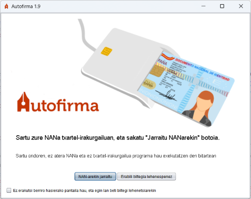

Sisteman instalatutako eta konfiguratutako txartel-irakurgailu adimendun bat detektatu bada bakarrik bistaratuko da pantaila hori. Hemen, erabiltzaileak NAN elektronikoa irakurgailuan sartu zain geratzen da programa, edo NANa erabili nahi ez duela adierazi zain.

Erabiltzaileak NANa irakurgailuan sartu eta "Jarraitu NANarekin" botoia saka dezake, NANaren sinadura-ziurtagiriarekin sinatzeko (ez da beharrezkoa NANaren kontrolatzaileak instalatuta edukitzea) edo "Erabili edozein ziurtagiri" botoia edo "Ihes" tekla saka dezake, sistema eragilean inportatutako ziurtagiriren bat erabili nahi badu.
Aukera bat hautatu ondoren, sinadura-pantaila bistaratuko da.